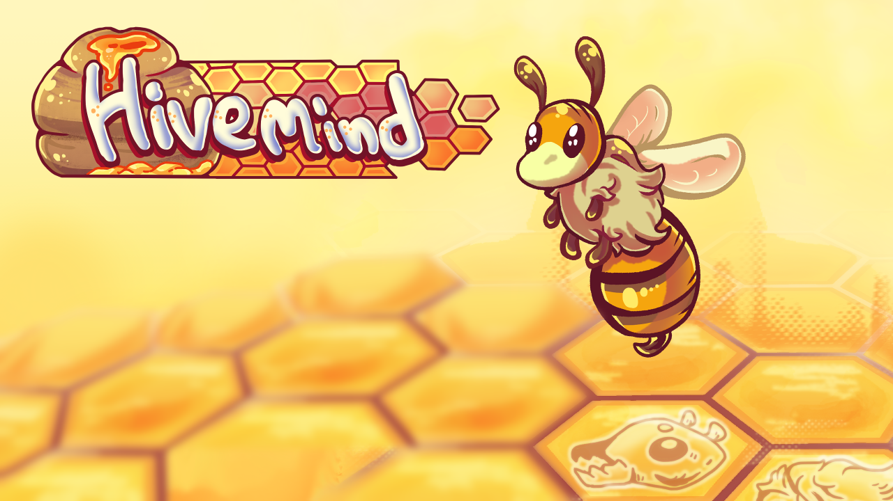
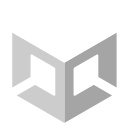

Unity In DevelopmentHivemind
A 2D pixel-art artificial life simulation, where players guide a colony of bees through challenges and harsh conditions, striving not only to survive but to become the most powerful hive, by gathering resources and creating… quite strange new breeds of bees.